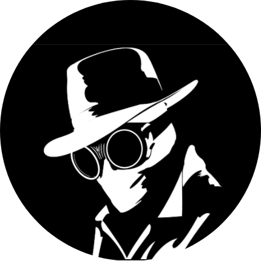

Arbab Ashruff Khan
Student Of Class 7
Section-A
RPM Academy
A middle school (also known as intermediate school, junior high school, or lower secondary school) is an educational stage which exists in some countries, providing education between primary school and secondary school.
Contact Info:arbabashruff@gmail.com
Schools I Have Attended
- Kidzee
- Kidzee is a pioneer of ECCE (Early Childhood Care and Education) in India and Nepal. Kidzee preschool is a part of 1900+ centers spread across 750+ cities in India and Nepal. Kidzee has nurtured over 9,00,000 children Kidzee has a proprietary pedagogy, ‘iLLUME’, India’s one and only university-verified preschool curriculum. Kidzee is a part of the renowned and reputed Zee Group and Essel Group.
- St Joseph's
- St. Joseph's School, Darjeeling was founded by Fr. Henri Depelchin on the 13th day of February, 1888, at Sunnybank,Darjeeling with 25 students on the rolls. It was shifted to its present location in 1892. North Point celebrated its 125th year anniversary on February 13th, 2014 which was graced by the presence of the then President of India, Shri Pranab Mukherjee.
- RPM Academy
- RPM Academy Educational Society, formed in 1993 at Kauriram Gorakhpur, Uttar Pradesh is the dream of our profound visionary Shri. Ajay Kumar Shahi, a man of rare and gifted personality who works and sweat for a great vision. The Name R.P. has been given to the school in loving memory of Late Ram Pyare Shahi who was an extremely upright and a benevolent man. RPM Academy is a privately owned Co-Educational English medium school.
My Hobbies
- ERROR 404 NOT FOUND!
Skills
Hindi |
💗 |
English |
💗💗💗💗💗 |
Science |
💗💗💗💗 |
Social-Science |
💗💗💗 |
Maths |
💗💗💗💗 |
Computer |
💗💗💗💗💗 |
G.K. |
💗💗💗 |
Arts&Crafts |
💗 |
Experiences And Certificates
| Dates |
Work |
| 2012. |
Completed Yearly Studies With Gold Medals In Side Activities. |
| 2013. |
Ranked In Top10 In Yearly Studies. |
Contact Me